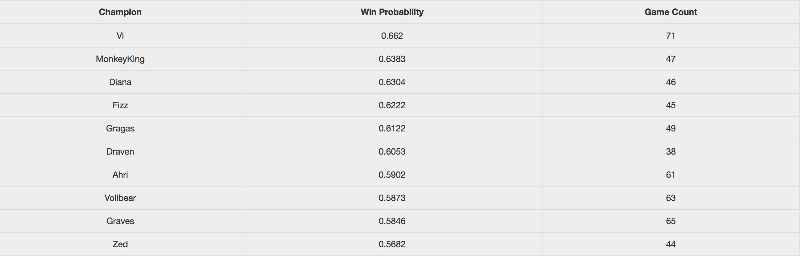

The pick-ban phase in League of Legends has always been an interesting mini-game. Given the 100+ champion pool (though not all are competitively viable), the vast combinations of team composition provides a dynamic and challenging phase of the game. As the game moves to a 10-champion ban mode, the complexity of the problem also increases. The purpose of this exercise is to attempt to facilitate the decision making process behind the pick-ban phase using statistics.
Demo can be found here.
Sample Output
 When the opponent team first picks Ryze, we should consider playing a team comp with Vi or Wukong.Data
Game history data obtained from Riot API.
Methodology
The general methodology used in rank ordering champions is as follows. 1) Filter out the entire data set so that it includes all games (identified by gameid) that includes the champions that have been picked by the two teams. 2) Filter out games that includes all opponent champions on one team, and all friendly champions on the opposite team. 3) Calculate win rate per champion in the filtered data set.
Data takes up about 80% of the time in building a model, but gets 20% of the credit.